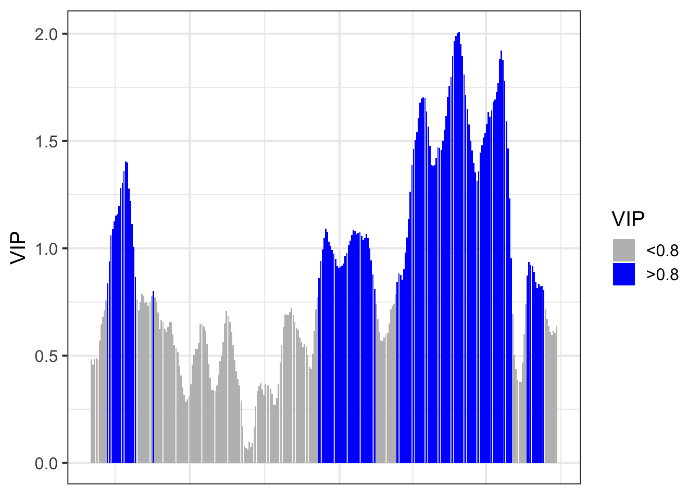
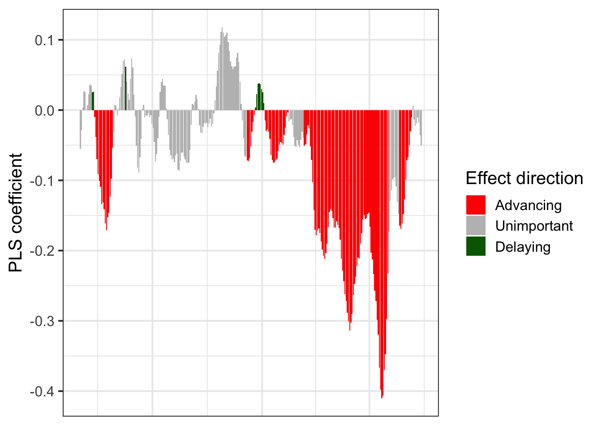
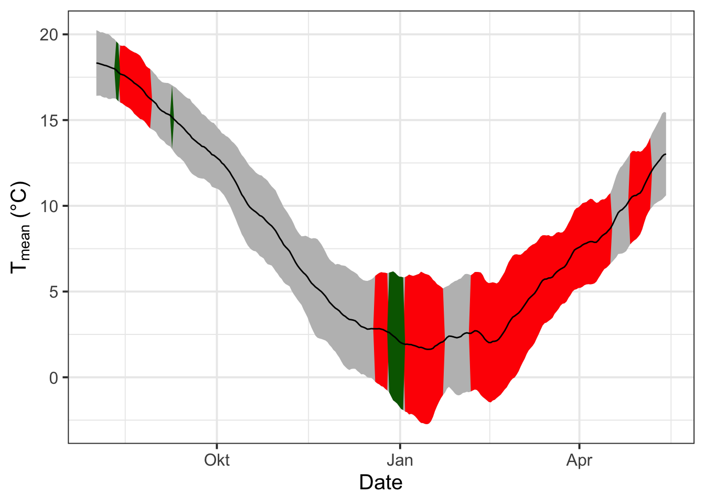
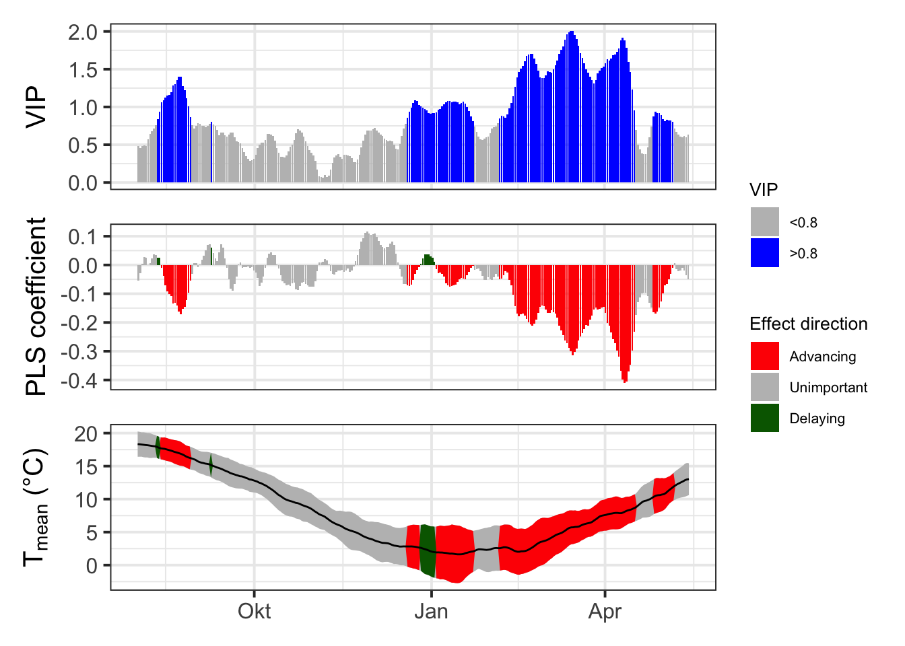

Chapter 17 Delineating Temperature Response Phases with PLS Regression
17.1 Task 1
Briefly explain why you shouldn’t take the results of a PLS regression analysis between temperature and phenology at face value. What do you need in addition in order to make sense of such outputs?
Generally, an attempt is made to describe and predict a dependent variable using many independent variables with a PLS (Partial Least Squares) or (Projection-to-Latent-Structures) method. This is a very common problem. In this case, an attempt is made to predict the blooming date (dependent variable) using a large amount of temperature data (independent variables). This has been exemplified in a lecture using the leaf emergence of a specific type of walnut tree. For this, temperature data over more than 50 years were related to leaf development using PLS. As expected, high temperatures in November/December resulted in later leaf development. This can be explained by the lack of chill during this time, which had to be compensated for later. High temperatures from January to mid-March, on the other hand, resulted in early leaf development. Examining the results of this PLS method, one can quickly assume that it is robust enough to make accurate predictions. However, there are some weaknesses. On the one hand, the data is relatively small in scope. On the other hand, dependent variables can still be influenced by other factors, such as changing soil conditions. It should be noted that PLS is a good method to get a rough idea, but the assumptions made from this foundation should always be rationally evaluated and supported with sound knowledge.
17.2 Task 2
Replicate the PLS analysis for the Roter Boskoop dataset that you used in a previous lesson.
Boskoop = read_tab("Roter_Boskoop_bloom_1958_2019.csv")
Boskoop_first = Boskoop[,1:2]
Boskoop_first[,"Year"] = substr(Boskoop_first$First_bloom,1,4)
Boskoop_first[,"Month"] = substr(Boskoop_first$First_bloom,5,6)
Boskoop_first[,"Day"] = substr(Boskoop_first$First_bloom,7,8)
Boskoop_first = make_JDay(Boskoop_first)
Boskoop_first = Boskoop_first[,c("Pheno_year","JDay")]
colnames(Boskoop_first) = c("Year","pheno")
kable(Boskoop_first[1:5,], caption = "Boskoop JDay Phenoloy") %>%
kable_styling("striped", position = "left",font_size = 8)%>%
scroll_box(width = "100%")| Year | pheno |
|---|---|
| 1958 | 129 |
| 1959 | 104 |
| 1960 | 115 |
| 1961 | 99 |
| 1962 | 134 |
KA_temps = read_tab("TMaxTMin1958-2019_patched.csv")
KA_temps = make_JDay(KA_temps)
kable(KA_temps[1:5,]) %>%
kable_styling("striped", position = "left",font_size = 8)%>%
scroll_box(width = "100%")| DATE | YEARMODA | Year | Month | Day | Tmin | Tmax | Tmin_source | Tmax_source | no_Tmin | no_Tmax | JDay |
|---|---|---|---|---|---|---|---|---|---|---|---|
| 01-01-58 | 19580101 | 1958 | 1 | 1 | 5.0 | 7.50 | NA | NA | FALSE | FALSE | 1 |
| 02-01-58 | 19580102 | 1958 | 1 | 2 | 1.5 | 9.00 | NA | NA | FALSE | FALSE | 2 |
| 03-01-58 | 19580103 | 1958 | 1 | 3 | -5.5 | 1.10 | NA | NA | FALSE | FALSE | 3 |
| 04-01-58 | 19580104 | 1958 | 1 | 4 | -5.5 | 0.50 | NA | NA | FALSE | FALSE | 4 |
| 05-01-58 | 19580105 | 1958 | 1 | 5 | 3.5 | 2.75 | NA | NA | FALSE | TRUE | 5 |
PLS_results = PLS_pheno(KA_temps,Boskoop_first)
kable(PLS_results$PLS_summary[1:5,]) %>%
kable_styling("striped", position = "left",font_size = 8)%>%
scroll_box(width = "100%")| Date | JDay | Coef | VIP | Tmean | Tstdev |
|---|---|---|---|---|---|
| 801 | -152 | -0.0550839 | 0.4813947 | 18.32970 | 1.914004 |
| 802 | -151 | -0.0280286 | 0.4583224 | 18.30846 | 1.884389 |
| 803 | -150 | 0.0034428 | 0.4856287 | 18.27148 | 1.844368 |
| 804 | -149 | 0.0267715 | 0.4904789 | 18.23742 | 1.886276 |
| 805 | -148 | 0.0250187 | 0.4832248 | 18.19609 | 1.884567 |
PLS_gg = PLS_results$PLS_summary
PLS_gg[, "Month"] = trunc(PLS_gg$Date / 100)
PLS_gg[, "Day"] = PLS_gg$Date - PLS_gg$Month * 100
PLS_gg[, "Date"] = ISOdate(2002, PLS_gg$Month, PLS_gg$Day)
PLS_gg[which(PLS_gg$JDay <= 0), "Date"] =
ISOdate(2001,
PLS_gg$Month[which(PLS_gg$JDay <= 0)],
PLS_gg$Day[which(PLS_gg$JDay <= 0)])
PLS_gg[, "VIP_importance"] = PLS_gg$VIP >= 0.8
PLS_gg[, "VIP_Coeff"] = factor(sign(PLS_gg$Coef) * PLS_gg$VIP_importance)
VIP_plot = ggplot(PLS_gg, aes(x = Date, y = VIP)) +
geom_bar(stat = 'identity', aes(fill = VIP > 0.8))
VIP_plot = VIP_plot +
scale_fill_manual(
name = "VIP",
labels = c("<0.8", ">0.8"),
values = c("FALSE" = "grey", "TRUE" = "blue")
) +
theme_bw(base_size = 15) +
theme(
axis.text.x = element_blank(),
axis.ticks.x = element_blank(),
axis.title.x = element_blank()
)
VIP_plot
coeff_plot =
ggplot(PLS_gg,aes(x=Date,y=Coef)) +
geom_bar(stat='identity',aes(fill=VIP_Coeff)) +
scale_fill_manual(name="Effect direction",
labels = c("Advancing", "Unimportant","Delaying"),
values = c("-1"="red", "0"="grey","1"="dark green")) +
theme_bw(base_size=15) +
ylab("PLS coefficient") +
theme(axis.text.x = element_blank(),
axis.ticks.x = element_blank(),
axis.title.x = element_blank() )
coeff_plot
temp_plot =
ggplot(PLS_gg) +
geom_ribbon(aes(x=Date,ymin=Tmean-Tstdev,ymax=Tmean+Tstdev),
fill="grey") +
geom_ribbon(aes(x=Date,ymin=Tmean-Tstdev*(VIP_Coeff==-1),
ymax=Tmean+Tstdev*(VIP_Coeff==-1)),
fill="red") +
geom_ribbon(aes(x=Date,ymin=Tmean-Tstdev*(VIP_Coeff==1),
ymax=Tmean+Tstdev*(VIP_Coeff==1)),
fill="dark green") +
geom_line(aes(x=Date,y=Tmean)) +
theme_bw(base_size=15) +
ylab(expression(paste(T[mean]," (°C)")))
temp_plot
library(patchwork)
plot = (VIP_plot +
coeff_plot +
temp_plot +
plot_layout(ncol=1,
guides = "collect")
) & theme(legend.position = "right",
legend.text = element_text(size=8),
legend.title = element_text(size=10),
axis.title.x=element_blank())
plot
17.3 Task 3
Write down your thoughts on why we’re not seeing the temperature response pattern we may have expected. What happened to the chill response?
Generally, it would be expected that the “chill” phases and “forcing” phases of trees would be clearly visible. In this case, the growing season of the trees can be relatively well determined. As expected, higher temperatures are closely related to an early onset of blooming when they occur from January to mid-March. However, the situation is different with the “chill” phase. When high temperatures occur in November and December, only a slight shift in the blooming period is observed. The reason for this could be that only average temperatures are taken into account, so high temperatures that delay the chill phase are not as easily detected.